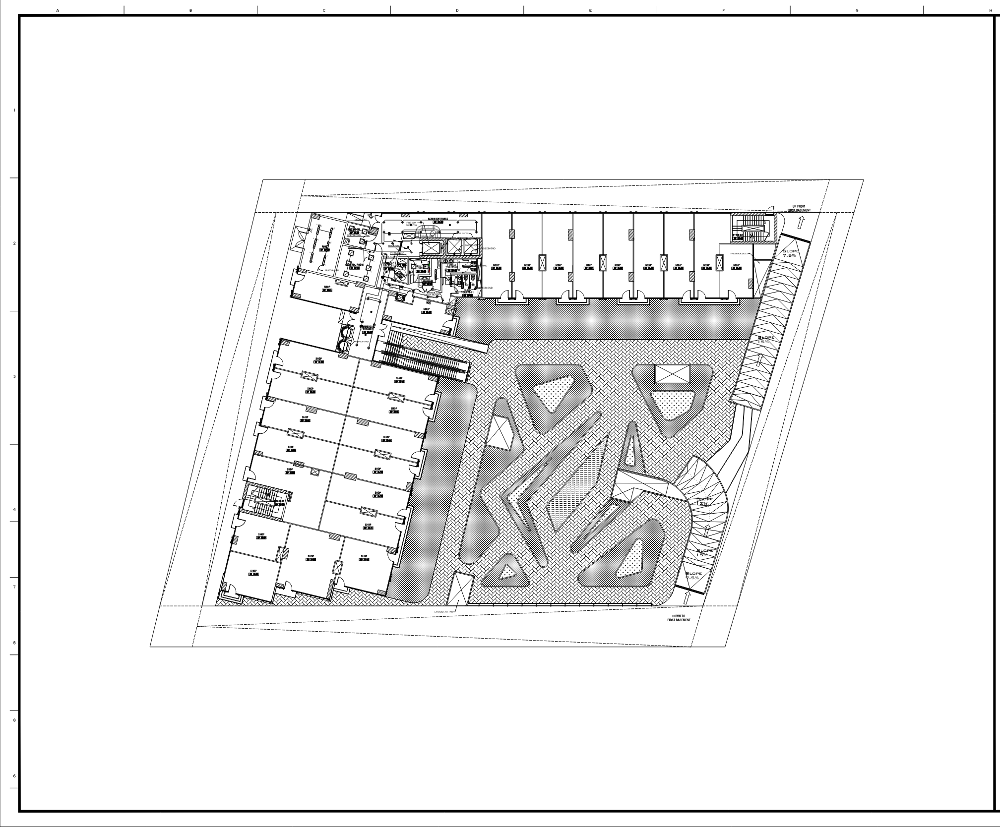
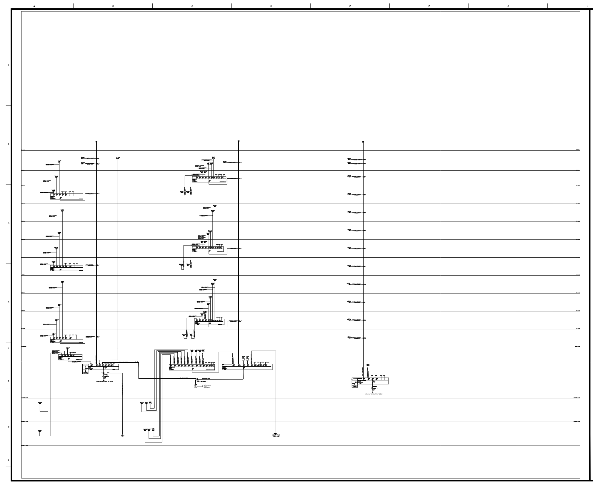
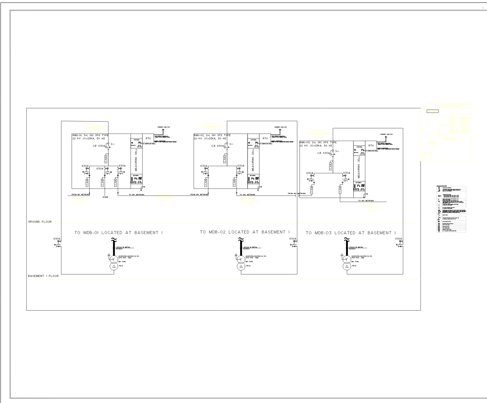
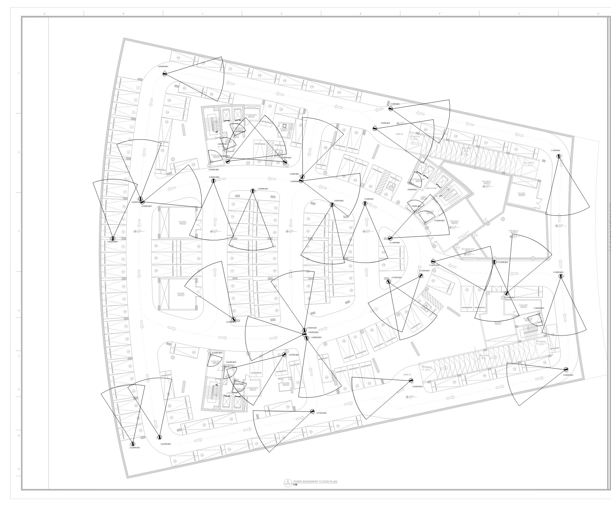

MOAZ HAMDY
Cairo, Egypt · moazhamdy1112@gmail.com · linkedin.com/in/moaz-hamdy112
About
Electrical MEP design engineer covering power, lighting, low-current and smart-building systems for malls, towers, offices and villas in Egypt (New Administrative Capital) and Saudi Arabia. Work spans early coordination, calculation (ETAP), SLDs and panel schedules, low-current risers, DIALux studies and KNX automation drawings. KNX Partner certified (Basic, Advanced, Advanced HVAC).
Technical expertise
Power, mechanical power, cable routing, SLD, panel schedules, earthing, EV, PV
DIALux Evo, indoor, outdoor, facade
Telecom, CCTV, fire alarm, parking, disabled alarm, access control, sound
KNX design, automation shop drawings, ETS
Revit MEP, Navisworks clash detection
Voltage drop, short circuit (IEC 60909)
Case study 1 — X1 Mall, New Administrative Capital
| Location | New Administrative Capital, Egypt |
|---|---|
| Type | Mall, multi-level with basements (drawing list runs Basement 3 to Roof) |
| My role | Electrical and low-current designer: drawings, calculations and documentation |
| Software | AutoCAD, ETAP 19.0.1C, Revit MEP |
Workflow evidenced by the files
*Early coordination with the architectural team covered electrical room, shaft and service-space requirements.
Deliverables in the files
- Drawing list (EL, EP, EMP, CR, EV, earthing and lightning, PV, LV-SLD-100/101/102, MV-SLD).
- ETAP voltage-drop and short-circuit studies (IEC 60909): 43 buses in the model, 2 two-winding transformers, 1 generator; busway and breaker sizing sheets (example: transformer 2000 kVA, 6% impedance, 4000 A busway).
- Panel schedules with voltage drop and short circuit; electrical room sections (RMU, TR1, TR2); MV routing plan.
- Low current: telecom, CCTV, fire alarm, parking, disabled system, access control, sound system, LC cable routing, and riser diagrams for fire alarm, telecom, sound, parking and access control.


Highlight
The package connects the ETAP studies, the SLD and panel schedules, and the low-current risers in one coordinated documentation set, rather than isolated plans.
Case study 2 — OKASA Mall, New Administrative Capital
| Location | New Administrative Capital, Egypt |
|---|---|
| Type | Mall; ground plus 3 floors per the calculation note |
| My role | Electrical and low-current designer: drawings, calculations and documentation |
Design basis (from the project calculation note)
- Total designed load 5,656.1 kVA, fed by three dry-type transformers (2 × 2000 kVA and 1 × 2500 kVA) via three RMUs (2+1, 2+1, 3+1) at 22/0.4 kV.
- 1400 kW standby generator serving lighting, EMCC panels for smoke extract and stair pressurization fans, and some lifts, drainage pumps and jockey pump.
- Also in the files: ETAP generator sizing report, lightning protection calculation sheet (IEC), PV SLD and PV report.
Deliverables
- Drawing list: lighting, power, mechanical power, cable routing, earthing and lightning, EV, PV (2 parts), RMU, transformer and MDB room drawings and sections, LV SLD parts 1–3, MV SLD.
- Low current: telecom/data, CCTV, fire alarm (plus fire matrix), access control, parking, disabled, sound, LC cable routing, risers.
- Low-current deliverables checklist: 741 ONT units, 860 CCTV outlets, 741 single-phase smart meters (per checklist).


Case study 3 — Rosalie Hotel Facade Lighting
| Type | Hotel facade lighting |
|---|---|
| My role | Facade lighting designer (design and CAD) |

Case study 4 — Armada KNX / Smart Building (Makkah and Madinah offices)
Presented as one combined case study. Both offices have automation and lighting DWGs, a riser diagram and DIALux reports.
- KNX architecture (Makkah riser): two power supply units (PSU 01, PSU 02) on a KNX bus, switch actuators (SA 01–02 and SA 01–03 groups) and presence sensors, with quantities annotated on the drawing (sensors: 12 and 14; actuators: 2 and 3).
- Madinah: riser drawing and a blind actuator wiring diagram.
- Lighting integration: separate Lighting DWGs and DIALux "OFFICE F2" reports.


Case study 5 — Villa BIM: Revit-to-Navisworks Workflow
| Type | Residential villa, electrical BIM model |
|---|---|
| Software | Revit MEP, Navisworks, Autodesk Construction Cloud |
Documented views: lighting, power, cable routing, data and telephone, CCTV; panel schedules, schedules and BOQ, sheets, NWC export, sets and clash reports.


Clash detection: before → coordination → after


Test list (last run 3 July 2026): EL FIX vs Railing, 1 clash, resolved; EL FIX vs Doors and Windows, 5 clashes, resolved (hard clash, 0.001 m tolerance).
Villa exterior lighting — effect visualization
Exterior lighting concept for a private villa: cove lighting on the roof edges, grazing lights on the feature wall, framed glazing outlines and landscape uplighting.
DIALux lighting studies
Reports in the files: Ghiras Schools, Al Yamamah University Stadium, Villa (4 floors), Waseel Farm villa, Al-Rimal villa, Fursan Gate office, tourism office, Ramz Al-Bea'a office, parking project, Awtad Al-Fahd outdoor restaurant, Al Rossais tower facade.
| Ghiras Schools summary | Achieved Em / Uo vs target: Canteen 323 lx / 0.4 (target 200 lx / 0.4); Teachers Lounge 496 lx / 0.61 (300 lx / 0.6); Science Lab 01 501 lx / 0.64 (500 lx / 0.6); Sewing Skills 468 lx / 0.66 (400 lx / 0.6). |
|---|